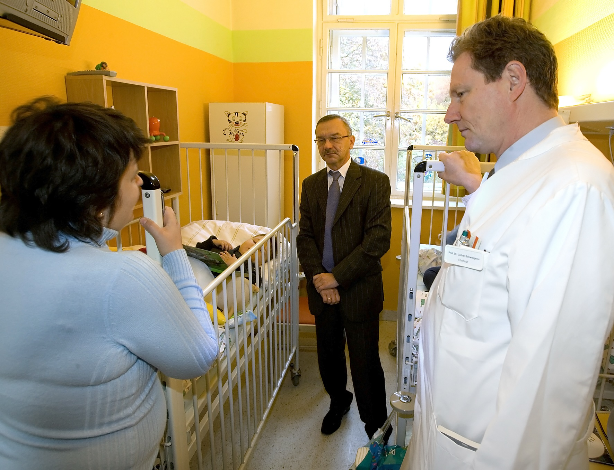

Eingang zur Kiewer Kinderklinik "Ohmatdyt"
Berlin-Buch · Ukraine · Kinderonkologie
Als ich die Leitung der Klinik für Kinder- und Jugendmedizin im Helios Klinikum Berlin-Buch übernahm, gab es zunächst genug zu tun. Zwei eigenständige Kinderkliniken mussten zu einer zusammengeführt werden. Zwei Teams, zwei Kulturen und zwei gewachsene Strukturen sollten plötzlich gemeinsam funktionieren. Das bedeutete nicht nur organisatorische Arbeit. Es bedeutete auch, für die neue Klinik eine gemeinsame Richtung zu finden.
Ein besonderer Schwerpunkt war die Kinderonkologie. Sie war bereits gut aufgestellt. Wir verfügten über erfahrene Mitarbeiter, ausreichend Platz und eine moderne Ausstattung. Trotzdem hatte ich das Gefühl, dass wir mehr erreichen konnten. Ich begann darüber nachzudenken, ob wir auch Kindern aus dem Ausland helfen könnten. Westeuropa schied schnell aus. Dort war die kinderonkologische Versorgung ebenso gut wie bei uns. Einen wirklichen Unterschied hätten wir dort kaum machen können.
Also schaute ich auf eine Landkarte. Die Kinderonkologie der Charité arbeitete bereits eng mit Russland zusammen. Deshalb fragte ich mich, welches Land als weiterer Partner in Frage kommen könnte. Die Ukraine war nach Russland das bevölkerungsreichste Land Osteuropas. Gleichzeitig erhielten wir immer wieder Anfragen ukrainischer Eltern, ob wir ihre an Krebs erkrankten Kinder in Berlin behandeln würden.
Meine Antwort lautete fast immer gleich. Natürlich konnten wir helfen. Aber wir konnten eine solche Behandlung nicht kostenlos übernehmen. Deshalb boten wir an, die Kinder zum Selbstkostenpreis zu behandeln. Gleichzeitig versprach ich den Familien, nach Finanzierungsmöglichkeiten zu suchen. Dabei stieß ich auf die Stiftung „Ein Herz für Kinder“. Ich half den Eltern bei den Anträgen. Erfreulicherweise wurden viele bewilligt. Dadurch konnten nach und nach immer mehr ukrainische Kinder zu uns kommen. Zeitweise behandelten wir gleichzeitig fünf bis zehn Kinder aus der Ukraine – bei insgesamt etwa vierzig bis fünfzig Neuerkrankungen pro Jahr eine bemerkenswerte Zahl.
Eine Frage ließ mich dabei allerdings nicht los. Ich fragte die Eltern immer wieder, weshalb sie den langen Weg nach Berlin auf sich nahmen. Die Behandlung ihrer Kinder wäre in der Ukraine doch kostenlos gewesen. Die Antwort fiel erstaunlich eindeutig aus. Nicht die Kosten seien das Problem, sondern die Qualität der Behandlung.
Dieser Satz beschäftigte mich. Mir wurde klar, dass wir auf Dauer nicht dadurch helfen würden, möglichst viele Kinder nach Berlin zu holen. Wir mussten dafür sorgen, dass die Behandlung in der Ukraine selbst besser wurde.
Mit diesem Gedanken lud ich den ukrainischen Botschafter Igor Dolgov zu einem Besuch in unsere Klinik ein. Er nahm die Einladung tatsächlich an. Wir führten lange Gespräche über die Situation der Kinderonkologie in seinem Land und über Möglichkeiten einer Zusammenarbeit.

Wenig später erhielt ich eine Einladung nach Kiew.
Damals ahnte ich noch nicht, dass mich diese Einladung über viele Jahre beschäftigen würde. Sie führte mich nach Kiew, in internationale Expertenkommissionen, zu „Ein Herz für Kinder“, zu den Klitschkos und schließlich sogar zur First Lady der Ukraine.
Doch das ist eine andere Geschichte.